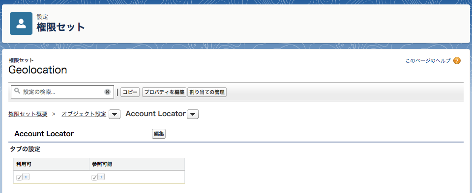
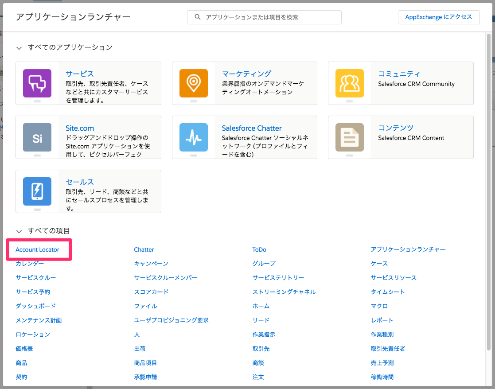
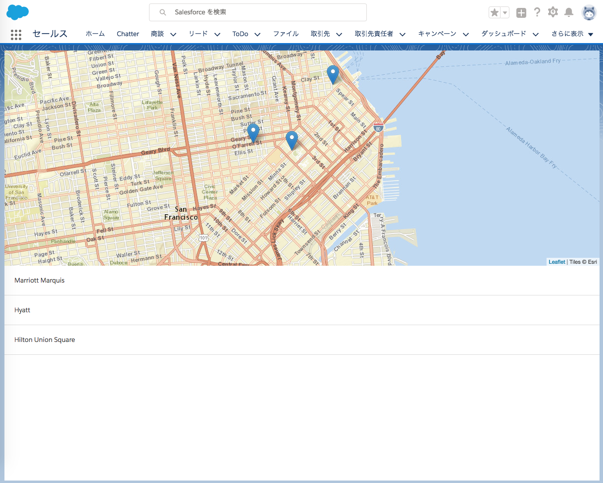

4. Build the Account Map Display
この章では引き続き Geolocation アプリを作りつつ、完成したものをテスト用の別組織にデプロイして動作確認します。
が、前章でアプリのソースコードについては省略してしまったので Create a Lightning Event to Add Markers to the Map の項までは済んでおり、アプリとしては完了しています。
試しに、Scratch Org でアプリを表示させてみましょう。
$ sfdx force:org:open
で Scratch Org を開きます。
Account Locator というタブが追加されましたが、権限を付与していないので付与します。
権限セット Geolocation で設定すると良いでしょう。

権限が付与されると、アプリケーションランチャーから「Account Locator」にアクセスできるようになります。


このように表示されれば成功です。
アプリケーションを検証する
ここまででアプリケーションが無事完成したことが確認できました。
最後は動作確認ですが、テストには開発に使用した Scratch Org とは別の、まっさらな Scratch Org を新たに作成して
そちらで検証するのが望ましいとされています。
これまでにやった一連の操作の繰り返しになりますが、新しい Scratch Org にアプリをデプロイしてみましょう。
# 1. Scratch Org を作成（名前は GeoTestOrg）
$ sfdx force:org:create -f config/project-scratch-def.json -a GeoTestOrg
# 2. ソースコードをデプロイ
$ sfdx force:source:push -u GeoTestOrg
# 3. 権限セットを付与
$ sfdx force:user:permset:assign -n Geolocation -u GeoTestOrg
# 4. サンプルデータのインポート
$ sfdx force:data:tree:import -f data/Account.json -u GeoTestOrg
# 5. 組織を開く
$ sfdx force:org:open -u GeoTestOrg
-u で対象組織を指定できるみたいですね。
新しい GeoTestOrg でもアプリケーションが動作するのを確認できれば、この章は終了です。